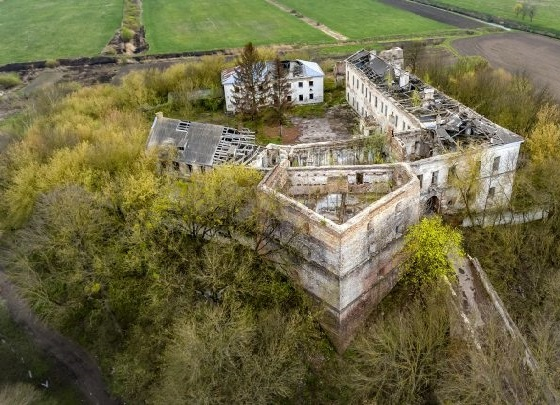
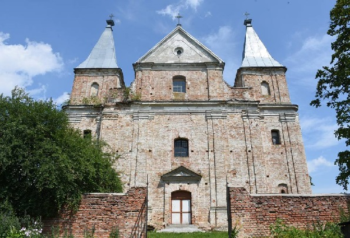
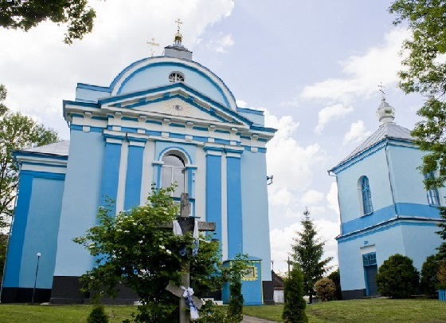
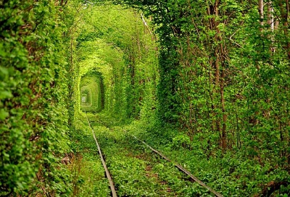

Відомості про первісну фортецю датовані 1475 роком. Саме село в письмових джерелах вперше згадано під 1458 роком як власність князя Михайла Чорторийського. У 1495 році його син князь Федір Чорторийський, луцький староста, добудував замок, оточив його міцними кам'яними стінами і глибоким ровом, який заповнювався водою Стубли.Закінчилася побудова замку в 1561 році.

Фундатором храму був князь Юрій Чорторийський (бл. 1540—1626, спочатку був православним). Він записав фундуш для православного храму у Клевані (за іншими даними, власне для костелу) 1590 року, тоді ще дерев'яного. Був першим серед заможної родини Чорторийських, що 1598 року змінив обряд (перейшов на унію). Власний князівський двір з міста Луцьк переніс на постійно до містечка Клевань.

Церква Різдва Христового була зведена у 1777 р. у стилі класицизму як греко-католицька церква на кошти князя Адама Чарторийського і знаходиться у самому центрі селища, поблизу давнього городища, неподалік від замку. Однак, при вході можна побачити охоронну таблицю-паспорт, де помилково зазначається 1514 р. як рік її будівництва, насправді це не відповідає дійсності.

Тунель кохання - це зелений тунель у лісовому масиві, утворений через рух потягу до/від деревообробного заводу в Оржеві. На своєму шляху через ліс потяг збиває гілки дерев, кущів. Внаслідок цього утворився щільний коридор точної арочної форми. Завдяки вдалому маркетингу, тунель є місцем паломництва туристів та закоханих. Є ряд повір'їв щодо тунелю та його властивостей.
Всі права захищені ©
смт.Клевань